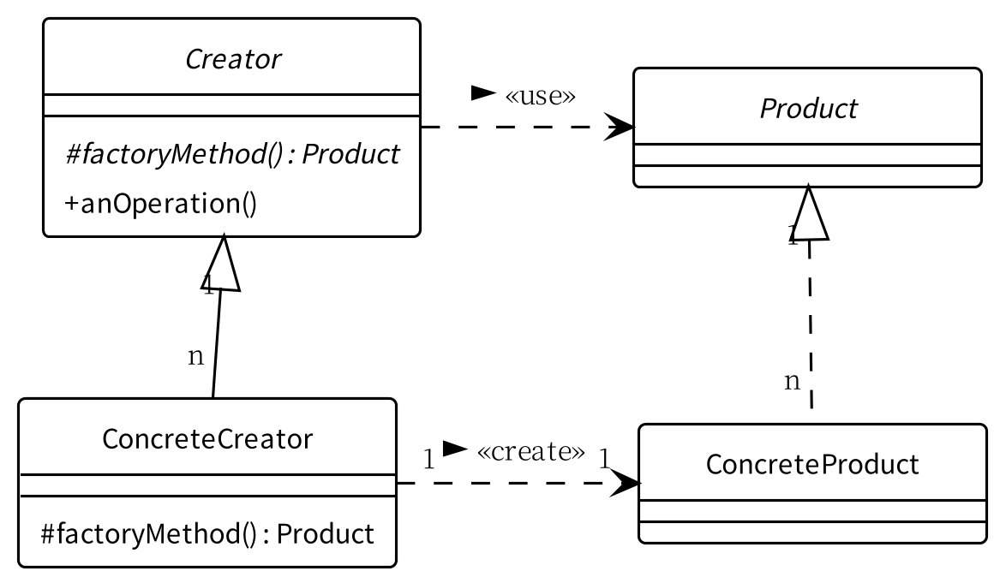

Java 20 がリリースされた

予定通り Java 20 がリリースされた。 2023-03 までの短期サポート・バージョンである。
主な内容は以下の通り。
via
JDK 20
OpenJDK を APT で管理するメリットはないので，実行バイナリをリリースページから直接ダウンロードして配置する。 以下は完全手動でのインストール（笑）
$ cd /usr/local/src
$ sudo curl -L "https://download.java.net/java/GA/jdk20/bdc68b4b9cbc4ebcb30745c85038d91d/36/GPL/openjdk-20_linux-x64_bin.tar.gz" -O
$ cd ..
$ sudo unlink java # 以前のバージョンの Java 環境がある場合
$ sudo tar xvf src/openjdk-20_linux-x64_bin.tar.gz
$ sudo ln -s jdk-20 java
$ java -version # すでに PATH が通っている場合
openjdk version "20" 2023-03-21
OpenJDK Runtime Environment (build 20+36-2344)
OpenJDK 64-Bit Server VM (build 20+36-2344, mixed mode, sharing)
LTS 版 Java バイナリが欲しいなら Adoptium で取得できる。
私としては PlantUML が動けばいいので，試しておく1。

よーし，うむうむ，よーし。
Oracle Java のサポート期間
“Oracle Java SE Support Roadmap” より。
| Release | GA Date | Premier Support | Extended Support |
|---|---|---|---|
| 11 (LTS) | 2018-09 | 2023-09 | 2026-09 |
| 17 (LTS) | 2021-09 | 2026-09 | 2029-09 |
| 19 | 2022-09 | 2023-03 | - |
| 20 | 2023-03 | 2023-09 | - |
| 21 (LTS) | 2023-09 | 2028-09 | 2031-09 |
2023-03 時点で Premier Support が終了しているものは除いている。 Java 8 については Adoptium などで最新バイナリを取得可能。
ブックマーク
- 「Java 20」正式リリース。スレッド間で共有できるScoped Values、複数スレッド処理をまとめるStructured Concurrencyなど新機能 － Publickey
- Oracle、「Java 20」を発表 ～変数のスレッド共有を簡潔・高速にする「Scoped Values」を追加 - 窓の杜
- Release GraalVM CE 23.0.0-dev-20230321_0741 · graalvm/graalvm-ce-dev-builds · GitHub
参考図書

- Spring Data JPAプログラミング入門
- 溝口賢司 (著)
- 秀和システム 2017-08-03 (Release 2018-04-23)
- Kindle版
- B07CKHR8C1 (ASIN)
- 評価
JPA のお勉強用に購入。紙のほうはプレミアが付いてるっぽいが Kindle で買えるよ。固定レイアウトだからブラウザの Kindle Cloud Reader で読めるし。真面目に基本を押さえて書いていて分かりやすい。

- Effective Java 第3版
- Joshua Bloch (著), 柴田 芳樹 (翻訳)
- 丸善出版 2018-10-30
- 単行本（ソフトカバー）
- 4621303252 (ASIN), 9784621303252 (EAN), 4621303252 (ISBN)
- 評価
再勉強中。 Kindle 版のほうがちょっと安いが，勤務先でも使いたかったので紙の本にした。

- Spring Boot 2 入門: 基礎から実演まで
- 原田 けいと (著), 竹田 甘地 (著), Robert Segawa (著)
- 2020-05-22 (Release 2020-05-22)
- Kindle版
- B0893LQ5KY (ASIN)
- 評価
Spring Boot を勉強することになって急遽買った本。めっさ分かりやすかった。 PDF 版が欲しいくらい（笑） Spring Boot 3.2 対応にアップデートされていた。素敵！